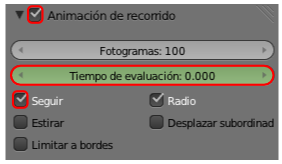
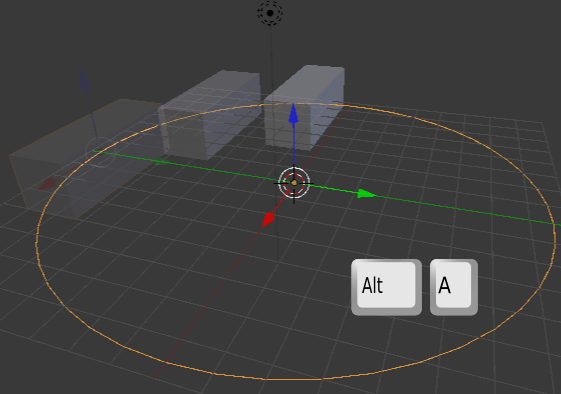

Una triquiñuela
¿Por qué no hay movimiento si se pone en marcha la animación ("Alt_A")?. Pues porque al contrario de los modificadores Ola y Construir, las restricciones no crean animaciones directas.
El problema radica en la curva. Si la seleccionamos y vamos a su panel  vemos que en la botonera Animación de recorrido (que tiene que estar activada) tiene un parámetro Tiempo de evaluación.
vemos que en la botonera Animación de recorrido (que tiene que estar activada) tiene un parámetro Tiempo de evaluación.
En teoría deberíamos crear nuestros primeros fotogramas clave ahí, pero nuestra intención en este módulo es no entrar en ese terreno; así que vamos a usar un truco para que se genere lo necesario y obtener la animación.
- Seleccionamos, en este orden, el cubo y después la curva para que esta sea el objeto dominante.
- Hacemos Objeto/Padre/Establecer/Seguir camino (o con "Control_P"/Seguir camino). Ocurren tres cosas:
- El cubo se descontrola.
- Se ha activado automáticamente al opción Seguir. Sin embargo es intrascendente en nuestro plan; lo mismo da que esté activado o desactivado.
- Se crean los fotogramas clave que necesitamos. La prueba es el cambio de color del parámetro Tiempo de evaluación.

- Eliminamos el parentesco con Objeto/Padre/Limpiar/Eliminar padre (o "Alt_P"/Eliminar padre). Para esta operación al menos el cubo tiene que estar seleccionado. Curiosamente, y favorablemente a nuestros planes, la posición del cubo se restituye mientras que los fotogramas clave permanecen en el parámetro Tiempo de evaluación.
Con este sencillo truco tenemos nuestra animación. Ahora sí, al hacer "Alt_A" el cubo comenzará a moverse.
